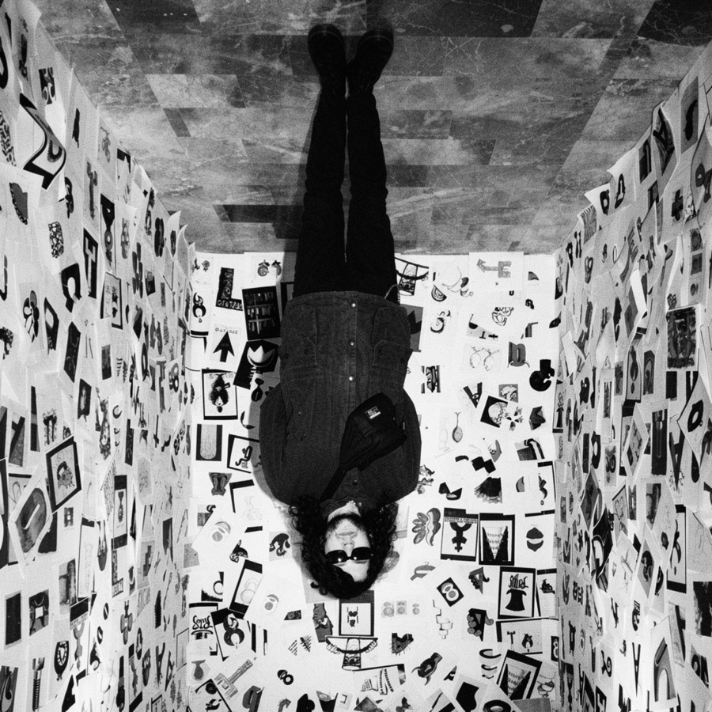
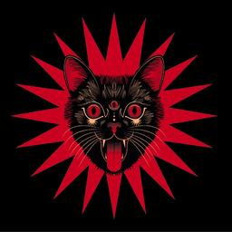
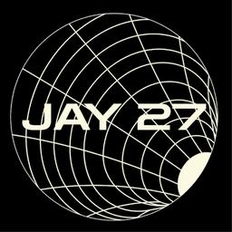

Lorenzo
Di Gioacchino
Multidisciplinary designer
Multidisciplinary designer working across visual identity, creative direction, product design, editorial projects, digital culture and independent cultural events. I develop projects from concept to execution, combining research, visual systems, communication strategy and hands-on creative production.
- Industrial Designer
- Visual Designer
- Graphic Designer
- Photographer
- Videomaker
- Persuasive Communication
- AI Creative Technologist
- AI Coding
- AI Concept Design
- AI Photo & Video
- Etc.
- 2024Surreo StudioFounder & Creative Director
- 2018Workshok!Co-Founder & Creative Director

2024Suburbiæ FestCo-Founder & Creative Director
2020JAY27Co-Founder
01Selected projects & initiatives07 entries
Suburbiæ Unexpected Fest
Co-Founder · Creative Director · Advertising Manager · Social Media Manager · Graphic Designer · Media Strategist · Content CreatorSuburbiæ Unexpected Fest is an independent music and arts festival based in Teramo, Abruzzo. Born from the cultural association JAY27, the festival brings together alternative music, visual culture, exhibitions, food and underground communities in a natural open-air setting. As Co-Founder and Creative Director, I contribute to the festival’s concept, visual identity, communication strategy, advertising campaigns, social media direction, graphic design, content production and overall creative development.
- 2024 · First EditionClaudio Simonetti’s Goblin, Soviet Soviet, The Devils, BAU
- 2025 · Second EditionGodflesh, Giuda, Horror Vacui, The Sade, Little Pieces of Marmelade, Jennifer in Paradise
- 2026 · Third EditionWolfmother, Messa, Stoned Jesus, Bull Brigade, Cyborg Zero · Æ-Talk with Rumore Magazine
- Press · Rumore MagazineSuburbiæ insert published in Rumore Magazine — see the project →
Surreo Studio
Founder & Creative DirectorA multidisciplinary creative studio founded to develop complex projects across design, visual identity, communication and creative direction.
Teramo About Rock
Art Director & DesignerA photography exhibition organized in collaboration with The Soundcheck Group, showcasing a curated selection of works by photographers documenting both underground and commercial music scenes. Location: Teramo.
JAY27
Co-Founder · Creative DirectorCultural association through which we organize and manage Suburbiæ Unexpected Fest and other events in Teramo.
- FestivalSuburbiæ Unexpected Fest
- ConcertsLaga Rock — Giancane, Giorgio Canali and more
- ExhibitionTeramo About Rock
Magazzino Magazine
Co-Founder & Editorial AssistantA digital and printed magazine focused on visual culture, design and contemporary creative practices. I collaborated on the first two issues.
APerspective — VR-Based Exhibit
DesignerThrough a workshop-based process, we developed a VR installation exploring the contrast between nature and digitalization. Location: UNICAM SAAD, Ascoli Piceno.
Workshok! (ex SAAD Workshop Week)
Co-Founder · Art Director · DesignerFormerly known as SAAD Workshop Week, Workshok! is an independent HUB for architecture and design education, focused on workshops, experimental laboratories and interdisciplinary learning experiences. It operates across physical and digital spaces, connecting research, education and design practice.
Over the years, Workshok! has organized workshops in collaboration with designers, studios and creative professionals — 41 courses- 2026 · SWW812AAI, Fammi 'Sto FattoGiovanni Abbatepaolo
- 2026 · SWW812BAI & CreativityEmanuele Jane Morelli
- 2025 · SWW711AConcrete MovesCentauroos
- 2024 · SWW610AWebsite Superfast!Mattia Marinangeli
- 2024 · SWW610BMotion Starz 2k24Ocular Lab
- 2023 · SWW59AMetaverse RealitiesDiorama Studio
- 2023 · SWW59BFritto Misto GenerativoGiovanni Abbatepaolo e Alessandro Caccuri
- 2023 · SWW59CFigma PowerMattia Marinangeli
- 2023 · ONLINE 88BVariable FontsMario De Libero (Zetafonts)
- 2023 · ONLINE 88CMotion DesignOcular Lab
- 2023 · ONLINE 88DIllustration SystemGiulia Zoavo
- 2023 · ONLINE 88A3D Motion con DitroitMarco Sarracca e Alessandro Nobile (Ditroit Studio)
- 2023 · ONLINE 88EVariable FontsMario De Libero (Zetafonts)
- 2023 · SWW47ADigital Fashion 3DTheBlackLabStudio (Amin Farah)
- 2023 · SWW47BInteractive MappingUltravioletto
- 2022 · SWW36AMapping ProjectionStudio Ultravioletto (Massimo Zomparelli e Laura Arcangeli)
- 2022 · SWW36BSpacescapeHomu Architects (Lucia Zamponi e Filippo Nanni)
- 2022 · SWW36CIt Make SenseCarlotta Latessa e Alessandro Tartaglia (FF3300)
- 2022 · ONLINE 55AType DesignTypebreak (Alberto Guerra e Giulia Zafferani)
- 2022 · ONLINE 55BVariable FontTypebreak (Alberto Guerra e Giulia Zafferani)
- 2022 · ONLINE 55DType Design, bisTypebreak (Alberto Guerra e Giulia Zafferani)
- 2022 · ONLINE 55FResponsive Design con TouchDesignerUltravioletto
- 2022 · ONLINE 55EType Design BasicsTypebreak (Alberto Guerra e Giulia Zafferani)
- 2022 · ONLINE 55CIllustrazione EditorialeAlice Piaggio
- 2022 · ONLINE 55GMotion SoundzOcular Lab
- 2022 · ONLINE 55HArtwork 3DRaffaele Micillo
- 2021 · ONLINE 44AType DesignTypebreak (Alberto Guerra e Giulia Zafferani)
- 2021 · ONLINE 44BType Design #2Typebreak (Alberto Guerra e Giulia Zafferani)
- 2021 · ONLINE 44CParametric Design & ArchitecturePio Lorenzo Cocco
- 2021 · ONLINE 44DParametric Design & ArchitecturePio Lorenzo Cocco
- 2021 · ONLINE 44EAnimation 2DOcular Lab
- 2021 · ONLINE 44FTutta Colpa del ClienteCaffè Design
- 2021 · ONLINE 44GCity DataPio Lorenzo Cocco
- 2020 · ONLINE 33AWeb DesignNicolò Miranda
- 2020 · ONLINE 33BVisual x ArchitectureAtelier Crilo (Lorena Greco e Cristian Farinella)
- 2019 · SWW22AGrafica GenerativaCH RO MO studio (Chris Rocchegiani, Roberto Montani) e Francesco Pezzuoli
- 2019 · SWW22BAnimazione 3DEmiliano Colantoni
- 2019 · SWW22CArchitetturaHomu Architects (Lucia Zamponi e Filippo Nanni)
- 2018 · SWW11ASoundscape DesignAlessio Ballerini
- 2018 · SWW11BHi-book AR EditingMartin Romeo
- 2018 · SWW11CSurfboard FabbingNoMade Boards
02Teaching01 entry
Warm Up — Accademia di Belle Arti di Macerata
Teacher · with Giovanni AbbatepaoloCreative Coding with AI — workshop.
03Education02 entries
Bachelor’s Degree — UNICAM SAAD
Design for Digital Innovation · Final grade: 110L/110Bachelor’s Degree — UNICAM SAAD
Environmental and Industrial Design · Final grade: 100/11004Awards & exhibitions03 entries
2nd Start Up Club Festival, Ancona
Project: InTime (Personal Project)The project, a child abduction detection sensor, received an award at the festival.
Triennale Milano / AIAP
Workshok! & Magazzino.saadIl mestiere del grafico oggi — selected for the workshop and exhibition dedicated to contemporary graphic design practice.
Rome Maker Faire
Magazzino.saadThe project was exhibited at Maker Faire Rome together with UNICAM SAAD.
05Main fields22
06Software & tools05 groups
- PsAdobe Photoshop
- AiAdobe Illustrator
- IdAdobe InDesign
- LrAdobe Lightroom
- AcAdobe Acrobat
- ExAdobe Express
- FrAdobe Fresco
- PcProcreate
- FgFigma
- AeAdobe After Effects
- PrAdobe Premiere Pro
- MeAdobe Media Encoder
- AnAdobe Animate
- FcFinal Cut Pro
- CcCapCut
- F3Fusion 360
- RhRhinoceros
- KsKeyShot
- TmTwinmotion
- DnAdobe Dimension
- UeUnreal Engine
- ArAdobe Aero
- SaSpark AR
- GpChatGPT
- ClClaude
- FfAdobe Firefly
- RwRunway
- HfHiggsfield
- GmGemini
- A1Automatic1111
- CuCursor
- FlFlora
- +and other AI-based tools
For selected projects, clients and case studies, visit surreostudio.com →